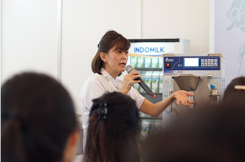

Mengungkap Rahasia Gelato: Gelato Class sebagai Pintu Menuju Dunia Gelato
 Gelato, sebuah kelezatan Italia yang memikat, telah menarik perhatian pecinta makanan di seluruh dunia. Dengan teksturnya yang lembut dan rasa yang memikat, gelato telah menjadi favorit di antara banyak orang, tidak hanya di Italia tetapi juga di berbagai belahan duniaGelato Class: Pintu Masuk ke Dunia Gelato
Event Gelato Class adalah kesempatan yang sempurna bagi siapa pun yang ingin menjelajahi dunia gelato lebih dalam. Acara ini biasanya dipandu oleh ahli gelato yang berpengalaman, yang tidak hanya akan mengajarkan peserta cara membuat gelato dengan benar, tetapi juga akan membagikan pengetahuan tentang sejarah gelato, teknik pembuatan yang tepat, dan tips-tips berharga untuk memulai bisnis gelato sendiriApa yang Akan Dipelajari di Gelato Class
Sejarah Gelato Peserta akan mendapatkan wawasan yang mendalam tentang asal-usul gelato, bagaimana gelato menjadi begitu populer di Italia, dan bagaimana resep-resep tradisional telah berkembang dari generasi ke generasiTeknik Pembuatan Gelato Ahli gelato akan membimbing peserta melalui setiap langkah dalam pembuatan gelato, mulai dari pemilihan bahan-bahan yang berkualitas hingga proses pencampuran, pasteurisasi, pendinginan, dan pembekuan
Variasi Rasa dan Kreasi Unik Peserta akan diajak untuk bereksperimen dengan berbagai rasa dan bahan tambahan untuk menciptakan gelato yang unik dan menarik. Ini adalah kesempatan bagi mereka untuk mengeksplorasi kreativitas mereka dan menghasilkan produk-produk yang memikat
Pengenalan Bisnis Gelato Selain pembuatan gelato itu sendiri, Gelato Class juga akan memberikan wawasan tentang aspek bisnis gelato. Ini termasuk pemahaman tentang biaya produksi, strategi pemasaran, dan bagaimana membangun merek gelato yang sukses
Alasan Bagus Bergabung dengan Gelato Class
Pembelajaran Praktis: Anda akan mendapatkan pemahaman mendalam tentang cara membuat gelato dengan benar, dari ahli yang berpengalaman dalam industriKesempatan untuk Bereksperimen: Gelato Class memberi Anda ruang untuk berkreasi dengan rasa dan tekstur, sehingga Anda bisa mengembangkan resep gelato yang unik sesuai dengan selera Anda sendiri
Pengenalan Bisnis: Jika Anda tertarik untuk menjadikan gelato sebagai bisnis, Gelato Class akan memberi Anda wawasan yang berharga tentang apa yang diperlukan untuk memulai dan menjalankan bisnis gelato yang sukses
Pengalaman Sosial: Selain pembelajaran yang berharga, Gelato Class juga merupakan kesempatan untuk bertemu dengan orang-orang yang memiliki minat yang sama dengan Anda. Anda bisa berbagi pengetahuan, pengalaman, dan bahkan membangun jaringan di industri gelato
Event Gelato Class adalah cara yang sempurna untuk memperdalam pengetahuan Anda tentang gelato, mulai dari sejarahnya yang kaya hingga teknik pembuatannya yang tepat
Ini juga merupakan kesempatan yang sangat baik bagi siapa pun yang tertarik untuk menjelajahi potensi bisnis gelato
Jadi, jika Anda ingin merasakan kelezatan gelato dalam segala aspeknya, jangan ragu untuk bergabung dengan Gelato Class berikutnya di kota Anda
Siapa tahu, mungkin saja Gelato Class ini menjadi langkah awal Anda menuju kesuksesan dalam dunia gelato!
Informasi lebih lanjut Hubungi kami di, +62 851 550 XXX XX